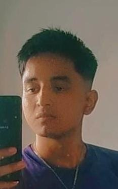
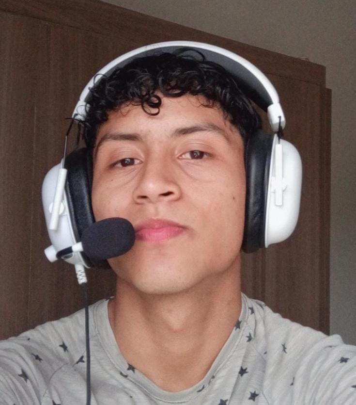
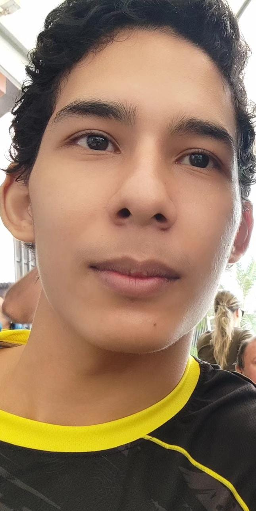

Categorias
Como un universitario especializado en programación, con una sólida base de conocimientos y habilidades en el desarrollo de software. He trabajado en diversos proyectos, lo que me ha permitido adquirir una experiencia significativa en este campo. Mi enfoque en la programación no solo refleja mi capacidad técnica, sino también mi dedicación y pasión por crear soluciones innovadoras y eficientes.
Mi experiencia me ha llevado a dominar diversas herramientas y lenguajes de programación, lo que me convierte en un recurso valioso en cualquier equipo de desarrollo. Como universitario, estoy en constantemente aprendiendo y mejorando, lo que me permite estar al tanto de las últimas tendencias y metodologías en la industria del software. Este equilibrio entre la teoría académica y la experiencia práctica me posiciona para enfrentar desafíos complejos en el futuro.
Integrantes
Dario Velez Peña
Investigador curioso y perspicaz que siempre está al tanto de las últimas noticias. Le apasiona conectar hechos, descubrir historias ocultas y compartir información clave con precisión y rapidez. Sus habilidades de análisis y comunicación lo convierten en una fuente confiable y respetada de informacion.
Soy un genio, millonario, playboy, filántropo y empresario. "Tony Stark"
Alias: Toño
Elkin Alban Vera
Vive por la música. Su voz melodiosa y su energía vibrante iluminan cualquier escenario. Es un creador incansable, componiendo letras que conectan con el alma y cautivando al público con actuaciones llenas de emoción. Siempre está buscando nuevas formas de transmitir sentimientos a través de su arte.
Darle a alguien un pedazo de tu corazon vale mas que todas las riquezas del mundo. "Michael Jackson"
Alias: El clasista
Dario Morales Moran
Amante de la tecnología que encuentra soluciones creativas a problemas complejos. Diseñador de sistemas eficientes y aplicaciones innovadoras. Para él, cada línea de código es una obra de arte que refleja lógica y precisión.
Es mejor intentar algo que no funcione y aprender de ello, que no hacer nada. "Marck Zuckerberg"
Alias: Beta tester
Tony Arreaga
Ejemplo de disciplina y fuerza. Dedica su tiempo a perfeccionar su físico, combinando entrenamiento riguroso con una dieta equilibrada. Más allá del gimnasio, inspira a otros a perseguir sus metas con determinación, mostrando que el verdadero poder viene del esfuerzo constante y la mentalidad positiva.
La verdadera grandeza. no se encuentra en la victoria efímera, sino en la perseverancia frente a la adversidad. "kojiro Sasaki"
Alias: Cbum
Fernando Pazmiño Soto
Apasionado del anime y el manga. Le encanta asistir a convenciones de anime y debatir teorías sobre las tramas más complejas. Además, es un gamer habilidoso que domina juegos de rol y lucha inspirados en el anime.
Quien no intenta progresar en hacer algo bien no sera capaz de superarse en si mismo y estara destinado a cometer el mismo error. "Ragna"
Alias: El otaku o el egoista